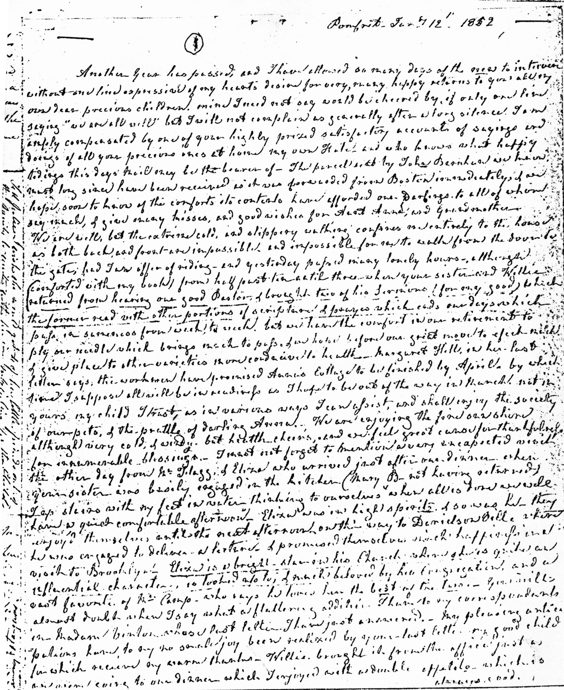
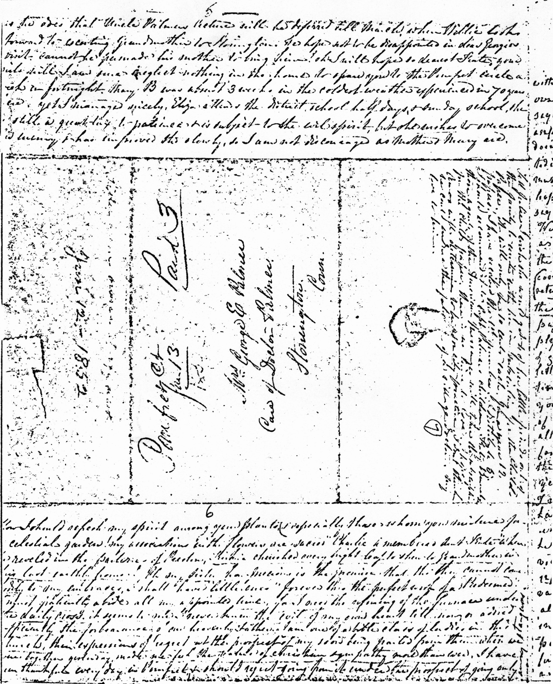

Appendix I
A Letter from Martha (Kingsley) McNeill and Anna (McNeill) Whistler to Catherine (McNeill) Palmer
The following letter was written jointly by Martha (Kingsley) McNeill and Anna (McNeill) Whistler to their daughter and sister, Catherine (McNeill) Palmer, on 12 January 1852, some three months before the death (on 7 April) of Martha (Kingsley) McNeill. The opportunity to thus juxtapose the similar styles of their expressions shows clearly how great the moral and religious influence of mother on daughter was.
This photocopy of portions of the letter and transcription of the complete letter were provided (26 March 1976) by Josephine Caldwell (d. March 1986), great-granddaughter of Charles Johnston and Eliza (Coffee) McNeill. All attempts to locate the originals have been unsuccessful.
The Two Sheets of the Handwritten Letter


Transcription of the Complete Letter
The following is the transcription of the complete letter provided by Josephine Caldwell. I have indicated, based both on Josephine Caldwell’s comments and on textual content, which parts of the letter were written by Anna Whistler, and which by Marth (Kingsley) McNeill.
This part of the letter was written by Martha (Kingsley) McNeill to her daughter, Kate:
Pomfret, Jan 12, 1852
Another year has passed and I have allowed as many days of the new to intervene without one line expressive of my heart’s desire for very happy returns to you all, my own dear precious children. Mine, I need not say, would be cheered by, if only one line saying “we are all well” but I will not complain as generally after a long silence, I am amply compensated by one of your highly prized satisfactory accounts of sayings and doings of all your precious ones at home, my own Kate, and who knows what happy tidings this day’s mail will be the bearer of. The parcel sent by John Brookman1 we know must long since have been received as it was forwarded from Boston immediately, & we hope soon to know of the comforts its contents have afforded our darlings to all of whom say much and give many kisses and good wishes from Aunt Anna and Grandmother.
We are well but the extreme cold and slippery walking confines me entirely to the house as both back and front are impossible and impossible for me to walk from the door to the gate, had I an offer of riding, and yesterday passed many lonely hours – although comforted with my books from half past ten until three when your sister and Willie2 returned from hearing our good pastor3 and brought two of his sermons (for my good) which the former read with other portions of scripture and prayers which end our days & which pass in sameness from week to week, but we have the comfort in our retirement to ply our needle which brings much to pass & we hope before our great move to effect much and give place to other varieties more conducive to health. Margaret Hill4 in her last letter says the workmen have promised Anna’s Cottage to be finished by April by which time I suppose all will be in readiness as I hope to be out of the way in March, not in yours, my child I trust, as in various ways I can assist and shall enjoy the society of your pets and the prattle of darling Anna.5 We are enjoying the fine sunshine although very cold and windy but health cheers, and we feel great cause for thankfulness and innumerable blessings.
I must not forget to mention a very unexpected visit the other day from Mr. Flagg & Eliza6 who arrived just after our dinner when your sister was busily engaged in the kitchen (Mary B.7 not having returned), I upstairs with my feet in water thinking to ourselves when all is done we will have a quiet comfortable afternoon. Eliza was in high spirits and so was he. They enjoyed themselves until the next afternoon on their way to Danielson Falls8 where he was engaged to deliver a lecture and promised themselves much happiness in a visit to Brooklyn. Eliza is a bright star in his church where she is quite an intellectual character, is looked up to, and much beloved by his congregation, and a vast favourite of Mrs. Camp9 who says he loves her best of the two. You will almost doubt when I say what a flattering addition I have to my correspondents in Madam Vinton10 whose last letter I have just answered. My pleasing anticipations have, to my no small joy, been realized by your last letter, my good child, for which receive my warm thanks.
Willie brought it from the office just as we were going to our dinner which I enjoyed with a double appetite which is always good, and as you sister wishes to add to this, I will resign my pen to her’s more able with the blessing of your affectionate Mother – M. McN.
This part of the letter was written by Anna (McNeill) Whistler to her sister Kate.
Our hominey11 has arrived in time as our rice is just out. Our dear Charles12 was well a short time since and begged love to you and the Doctor13 who will again receive my dear love. I take it for granted my dear George14 rec’d the pen wiper from Mary B. Mother sent one to Don.15 The bag was from Mary B. to darling Annie, the cherry color and white ear warmer from Nellie to Annie and the two white ones from me to Julie and Emma.16 Nellie’s new blue corded silk quilted hood is so becoming to her. I trust God will ward off contagion. The only disease I dread is small pox.
Mother, our beloved, has left me to tell you, my dearest Kate, of my children, judging of your interest by my own for yours. Oh, my Sister I unite my earnest thanksgiving with yours to our Father in Heaven that the illness which has increased your winter cares has not lessened your sources of home joys, for while I am but a sojourner, you have the substantial comfort of a settled home; long may it be thus your lot, with a husband to sustain you in the path of duty. Debo’s17 letter will be more satisfying than aught I can extract. Mrs. Park18 has ere this the due for taste and neatness in dressing the doll. Tell Emma with my love I hope she will reward you for all your care of her as my precious daughter19 has ever done, how sacred is the bond between us! She is so kind in the fondest of my memories, of home scenes passed away from me. George20 is equally dutiful and affectionate, poor fellow! I tenderly sympathize in his anxiety now because of our gentle Mary’s21 feeble frame of body. He fears she must suffer much, tho he clings to hope that the tender care of her mama may prop her so that she may long be spared to us. Her cough is of the most severe kind, her lungs diseased, and she is thin as a shadow. Her doctor does not speak encouragingly of her ever being stronger. She is confined to warm rooms and cannot make the least exertion without suffering; baby22 has quite outgrown her care of him. He has his first tooth and is sprightly and firm in health, the joy of Mrs. Ducatel’s23 whole house. George managed to get to West Point to spend half a day with Jemie24 on the 3rd. Our Cadet had passed the rigid examination creditably so Proff. Bartlett25 told George. I am expecting Jemie’s expression of thanks for the boxes of ginger snaps (& mince puffs, 3 doz) which I sent him via New Haven. Tho George judges by the bleakness of the plain & Jemie’s having had no overcoat that the soft, warm under-garments received from Aunt Alicia,26 my commission, would be most seasonable It seems until the ”plebes” pass their Jan. exam, they are not provided with military great coats, and of course allowed to wear no other. Ero [Ere] this I doubt not Jemie is rewarded but “Uncle Palmer” will be satisfied that his rheumatic patient has borne the cold without injury to health or limb. Thus far how favored we have been in our share of health. Willie27 is as tall as I am now, and as fat again! Tho he studies till a later hour than formerly since joining an evening class at the Rectory for the chief benefit of those who are preparing for visiting Germany. Willie is the pronouncing dictionary. I am glad on his account for the walk and to refresh his Deutch. As the present school term will be so brief I hope as he does that Uncle Palmers lecture will be deferred till March when Willie looks forward to escorting Grandmother to Stonington. We hope not to be disappointed in dear Georgie’s28 visit. Cannot he persuade his mother to bring him? O I will hope so, dearest Kate. Your girls will, I am sure, neglect nothing in the home to spare you to the Pomfret circle a week or a fortnight. Mary B. was absent 3 weeks in the coldest weather experienced in 70 years here. Yet I managed nicely. Eliza29 attends the District school half days and Sunday school She is still a great tax to patience and is subject to the evil spirit but she wishes to overcome her enemy and has improved tho slowly, so I am not discouraged as Mother and Mary are.
How I should refresh my spirit among your plants (and especially those whom you nurture for a celestial garden! My associations with flowers are sacred). “Charlie30 remembered Aunt Kate” when he reveled in the parterre of Preston. Kirkie31 cherished every bright leaf to show Grandmother in his last earthly home! Oh, my sister how precious is the promise that tho they cannot come bodily to my embraces, I shall have “little ones” forever thru the perfect work of a Redeemer. I must patiently abide all my appointed time, for I need the refining of the furnace under the daily cross. It seems to me I never knew the evil of my own heart till now, or adored sufficiently the forbearance of our heavenly father. I am one of a bible class of ladies in this church; their expressions of regret at the prospect of my soon being parted from them when we were together yesterday made me feel the value of christian sympathy more than ever. I have been thankful every day in Pomfret and should regret going from it under the prospect of going only among strangers.
Tell Julie I wish she would get 4 of her little friends out of the family to unite with her in subscribing for the Child’s Paper.32 It will only be 10 cents each, for a year 12 papers. I have received the first number. I distribute 5. I should recommend it to Capt. Palmer’s children33 Katy Bennett’s, those agents of the American Messenger34 will take the subscription for the Child’s Paper. There is no time to lose. I hope Amos35 will determine to try for city practice. I don’t think he could endure the fate of a village doctor. My love to him.
When I began on the other page I intended to preserve this for my scribbling is such a disgrace in contrast (to her mother’s) but I find this space necessary to tell you of again having heard from Preston;36 so much love was enclosed for the Corner House.37 I am glad you will soon write our sister Winnie. She and Mr. W. had just returned from Kirby L.38 in time to go to Hope Farm39 to spend Christmas. Only to think of Mr. Ware40 now being the sustainer of the drooping fireside circle. Jane Simpson41 so wasted away by disease that we could not recognize her. Jane Picard 42in consumption, little Johnie Picard feeble from effects of scarlet fever & his mother bowed down in anxiety for them all. What an angel that most devoted of all our sisters in Christ, Margaret Ware43 must be!
Tuesday morning 13th: Mother forgot to tell you dearest Kate of the frost at Charlie’s place44 after a 48 hours storm – trees & shrubs were broken by ice. Your sunny parlor so admirably regulated is a favorable enclosure for your plants. It will delight Mrs. Park45 when I tell her this evening (for I’ve promised Willie to go with him for an hour’s chat with her when he presents a frame he made for her in the holidays) the flourishing state of your jessamine. There is to be a sleighing party tonight & the two German scholars46 will not be at the Rectory so our pastor and lady will both be free. It is good to be with them I find. I am hurried this morning to get this ready for the mail. Will your dear children take less interest in their contract for the little boys grave stones if their cousins Jemie & Willie contribute a mite? Do as your excellent judgement approves, dear Kate. I enclose a dollar, devote it all or half as you think right; if you do not require all, then change in 3 cent stamps will be useful as here we cannot get them but this is “No chi vo”.47 The inscription ought to be simply “little Willie West”,48 don’t you think so? How delightful the privilege to your little flock to have visited the little one who loved Jesus so supremely & their walks to his grave in summer with dear Mother I hope I may sometimes join.49 Oh, Kate, how your best beloved50 must love the mother of such children! May your union become more and more cemented thru love to this bountiful Giver. Poor Mattio [Mattie]51 hoped if she were so lucky as to have a son live to win back her husband from disapation. I am rendered very uneasy by her silence, having never had any acknowledgement of the articles sent her thru the kindness of Fred & Mary.52 I shall write to her this week & to Donald53 too. I will get from the Bowers54 the rules for crochet pen wiper for dear Emma.55 Anna presented my ? with one for my Christmas & Nellie had embroidered me a beautiful toilette cushion.56 Mother rejoices that you had the family gathering at the Corner House on New Years day. I don’t know when we have been so glad as to hear of Aunty Swan’s57 breaking the ice. Our love to all Winterley58 branches, remembrances to Mr. & Mrs. Willey59 also. When you have a chance, dear Kate, remind Aunt Swan that I shall want my flower stand when I move to where I hope she will see it. Ask Russel Donivan60 what he would charge to repair the old rocking chair. Write soon to your loving sister
Anna M. Whistler
Embrace your husband and children for me.
Notes
1 It has not been possible to identify John Brookman.
2 This is William McNeill Whistler (1836–1900), Anna (McNeill) Whistler’s second son. See his biography in “The Whistlers as They Were in the 1840s,” Whistler … Fairfax in Appendix E, and Images 27, 30.
3 Their pastor was Rev. Dr. Roswell Park (1807–1869), who graduated from the USMA in 1831, serving as a military engineer from 1831 until 1836, then as a professor of natural philosophy and geometry at the University of Pennsylvania, until again changing careers. “In 1843, he was ordained a minister of the Protestant Episcopal Church and became Rector of Christ Church, Pomfret, Conn. Three years later (1846), he also took charge of Christ Church Hall, a high school, connected with his parish. Here he remained until 1852” (Edwin F. Hatfield, The Poets of the Church: A Series of Biographical Sketches of Hymn-Writers with Notes on Their Hymns [New York: Anson D.F. Randolph, 1884], p. 490).
4 Margaret Getfield Hill (1802–1881), Anna (McNeill) Whistler’s friend from girlhood days, lived in Scarsdale, New York. She had contracted for a cottage for Anna Whistler to be built on her property.
5 “Darling Anna” is Anna Whistler Palmer (b. 7 April 1848), daughter of Catherine (McNeill) and Dr. George E. Palmer (see Image 36) and namesake of Anna (McNeill) Whistler.
6 This is Rev. Edward Octavius Flagg (1824–1911), husband of Eliza Winstanley (McNeill) Flagg (1830–1855), daughter of Maria (Cammann) and William Gibbs McNeill and niece of Anna (McNeill) Whistler. The young couple had been married on 24 September 1851. Rev. Flagg, rector of Trinity Church, Norwich, Connecticut, was a poet and lecturer as well. See Whistler … Fairfax in Appendix E. The description here of Eliza Winstanley (McNeill) Flagg is one of the few pieces of information we have about her personality.
7 This is Mary Brennan (1828–1895), servant in the Whistler family, who had gone to Russia with them as nursemaid to Charles Donald Whistler. See Brennan, Bergen, Keefe in Appendix E.
8 “Danielson Falls” are possibly the falls in present day Old Furnace State Park in Danielson, a borough in the town of Killingly in Windham County, Connectictut (“Old Furnace State Park,” Connecticut’s Official State Website).
9 It has not been possible to identify Mrs. Camp.
10 This is possibly Elizabeth Mason (Perry) Vinton (1819–1878), wife of Francis Vinton (1809–1872), a prominent clergyman in the Episcopal Church (1839–1872). He was professor of ecclesiastical polity and canon law and in 1855 became a minister at Trinity Church in New york (see Image 49), where he remained until his retirement in 1871.
It could also be Mary (Atwell) Vinton (1773–1854), the grandmother of Francis Laurens Vinton (1835–1879), who was James’s roomate at the USMA and eventually became professor of mining and engineering there.
11 “Hominy” is “coarsely ground corn (maize) used to make grits” (Oxford English Dictionary, s.v. “hominy”), a popular dish in the southern United States. “Hominy (from Virginia Algonkian rockahominy meaning “boiled corn”) grits (from Old English greot, “crush”) is now a mush made [sic: from] fine-ground corn meal … There is a fairly clear line from Native American sofkey … and Cherokee/ Appalachian whole-grain hominy … through African American “hog and hominy” dishes, to today’s grits. A northern dish of whole-grain lye hominy and beans persisted regionally as Plymouth succotash” (Smith, Oxford Encyclopedia of Food and Drink, s.v. “hominy grits”). Anna Whistler was most likely speaking of a form of Appalachian whole-grain hominy.
12 This is Charles Johnston McNeill (1802–1869), son of Martha (Kingsley) McNeill and brother of Anna (McNeill) Whistler, who lived in Florida. See Whistler … Fairfax in Appendix E.
13 This is Dr. George E. Palmer, MD (see Image 36), husband of Catherine (McNeill) Palmer.
14 This is George William Whistler (1822–1869), step-son of Anna (McNeill) Whistler. See his biography in “The Whistlers as They Were in the 1840s,” Whistler … Fairfax in Appendix E, and Images 12–13.
15 This is Donald McNeill Fairfax (1824–1894; see Image 38) of the United States Navy, Anna (McNeill) Whistler’s nephew, son of her sister Isabella Kingsley (McNeill) (c. 1798 – c. 1850) and George William Fairfax (1797–1853). See Whistler … Fairfax in Appendix E.
16 Mary B. is Mary Brennan, Anna Whistler’s servant; Annie is Anna Whistler Palmer; Julie is Julia Palmer; Emma is Emma Woodbridge Palmer. Annie and Julie were the daughters of Catherine (McNeill) Palmer and Dr. George Palmer, MD, while Emma Woodbridge Palmer was Dr. Palmer’s daughter by his first marriage. It has not been possible to identify Nellie.
17 Debo is Deborah (Whistler) Haden (1825–1908 see Images 17–19, 21), step-daughter of Anna (McNeill) Whistler and wife of Francis Seymour Haden (1818–1910; see Image 20), English physician and etcher, whose marriage on 16 October 1847 on Preston, Lancashire, is recorded in detail in AWPD, Part II.
18 Mary (Brewster) Park was the wife of Rev. Dr. Roswell Park (1807–1869), Episcopalian minister and principal of Christ Church School in Pomfret.
19 Anna (McNeill) Whistler is referring to Deborah (Whistler) Haden (1825–1908; see Images 17–19, 21), her step-daughter, and hoping that Emma Woodbridge Palmer, Catherine (McNeill) Palmer’s step-daughter, will be as wonderful to her step-mother as Deborah has been to Anna Whistler.
20 This is George William Whistler (1822–1869), Anna (McNeill) Whistler’s step-son. See his biography in “The Whistlers as They Were in the 1840s,” Whistler … Fairfax in Appendix E, and Images 12–13.
21 This is Mary (Ducatel) Whistler (1825–1852), George William Whistler’s wife, who died of consumption in February 1852. See Whistler … Fairfax in Appendix E.
22 This is George Worthen Whistler (1851–1908), son of George William and Mary (Ducatel) Whistler. See Whistler … Fairfax in Appendix E.
23 This is Joanna (Barry) Ducatel (1800–1873), grandmother of George Worthen Whistler, in whose home he was being raised by her and her daughters. See Whistler … Fairfax in Appendix E.
24 James Abbott Whistler (1834–1903; see Images 24–29) was attempting to pass the entrance examinations for admittance to the USMA.
25 This is Professor William Holmes Chambers Bartlett (1804–1893), “professor of natural and experimental philosophy” who taught science and engineering at the USMA (William R. Livermore, “Biographical Notices: William Holmes Chambers Bartlett,” Proceedings of the American Academy of Arts and Sciences, new series, vol. 22; whole series, vol. 30 [Boston: John Wilson and Son for the University Press, 1895], p. 570).
26 This is Alicia Margaret Caroline McNeill (1791–1863), Anna (McNeill) Whistler’s half-sister from her father’s first marriage, to Alice Clunie (1758–1791). See Winstanley … Cragg in Appendix E.
27 This is William McNeill Whistler (1836–1900), second son of Anna (McNeill) Whistler, who was an assiduous student. See his biography in “The Whistlers as They Were in the 1840s,” Whistler … Fairfax in Appendix E, and Images 27, 30.
28 This is George E. Palmer Jr. (1843–1909), Anna (McNeill) Whistler’s nephew and son of Catherine (McNeill) and Dr. George E. Palmer, MD. See Whistler … Fairfax in Appendix E.
29 Eliza was a black servant girl in the employ of Arthur and Kate (Prince) Livermore whom Martha (Kingsley) McNeill and Mary Brennan were attempting, with apparent frustration, to train, so that she could then go back to the Livermores’ home in New Hampshire able to carry out her duties. In describing how she delivered Eliza to Arthur Livermore (Anna Whistler to James Whistler Scarsdale Wednes– evening Nov 16th [18]53, GUL: Whistler Collection, W425), Anna Whistler makes clear that Eliza is black by calling her “our Topsy,” a reference to the orphan slave girl in Harriet Beecher Stowe’s Uncle Tom’s Cabin (1852).
30 This is Charles Donald Whistler (1841–1843), who died on the Acadia en route to St. Petersburg in August 1843.
31 This is Kirk Boott Whistler (1838–1842), who died while his father, Major George Washington Whistler, was en route to St. Petersburg.
32 The first issue of The Child’s Paper, published by the American Tract Society, appeared in January 1852. “It was thought that a cheap, beautiful, and excellent paper for children, introduced into the several neighborhoods they visit, aside from the spontaneous circulation it might receive, would aid in supplying means of instruction and salvation for multitudes who otherwise would remain in comparative ignorance of religious truth” (American Messenger 10, no. 1 [January 1852]: p. 2).
Anna Whistler raised the issue of subscribing to The Child’s Paper in a February letter as well (Anna Whistler to My own dear Jemie Pomfret tuesday night Feb. 10th [1852], with continuation on Wednesday morning 11th, GUL: Whistler Collection, W406).
33 Captain Palmer is a relative of Dr. George E. Palmer, MD, whom it has not been possible to identify further.
34 Katy Bennett’s, according to Anna (McNeill) Whistler, was the agent through which one could subscribe to the American Messenger and other religious newspapers.
35 This is Dr. Amos Palmer, MD (1827–1861), son of Dr. George E. Palmer and his first wife, Emma (Woodbridge) Palmer (1802–1839).
36 Anna (McNeill) Whistler’s half-sister, Eliza Isabella (McNeill) (Wellwood) Winstanley (1788–1857; see Image 40) lived in Preston, Lancashire, with her second husband, John Winstanley (1776–1859). See Winstanley … Cragg in Appendix E. She is called “sister Winny” in this letter.
37 The Old Corner House (see Image 37) was the home in Stonington, Connecticut, of Dr. George E. Palmer, MD, Catherine (McNeill) Palmer, and the children from both of Dr. Palmer’s marriages.
38 The Winstanleys had just been on a visit to the family of Richard Stuart (1807–1877) Picard of Kirkby Lonsdale. See Winstanley … Cragg in Appendix E and Image 70.
39 On 11 April 1850, Anna (McNeill) Whistler also wrote to her son James asking that Mary Isabella (McNeill) Rodewald (1823–1867; see Image 32), who was traveling to England, carry a parcel of books to “Mary Smith” of Hope Farm (Anna Whistler to My dearest Jemmie Pomfret Thursday. April 11th. 50, GUL: Whistler Collection, W319), but it has not been possible to identify the location or owners of Hope Farm.
40 It is not possible to say who Mr. Ware is. Margaret (Winstanley) Ware’s husband and son had both died in 1843. A photocopy of this part of the letter was not supplied by Jospehine Caldwell, only a transcription.
41 This is Jane Simpson (1790–1852), who lived in the home of Richard Stuart Picard (1807–1877) in Kirkby Lonsdale. See Winstanley … Cragg in Appendix E.
42 This is Jane Picard, sister of Richard Stuart Picard. See Winstanley … Cragg in Appendix E.
43 This is Margaret (Winstanley) Ware (1801–1877), widow of William Ware (1793–1843) and sister of Elizabeth (Winstanley) Picard. See Winstanley … Cragg in Appendix E.
44 Charles Johnston McNeill (1802–1869), Anna (McNeill) Whistler’s brother, lived in Florida on a plantation with his mulatto wife, Eliza (Coffee) McNeill (c. 1828–1898), and their children. His mother, Martha (Kingsley) McNeill, visted them almost annually and supervised the moral, spiritual, and social training of both her daughter-in-law and their children. The explanatory correspondence of Josephine Caldwell, great-granddaughter of Charles Johnston and Eliza (Coffee) McNeill, associated with this joint-letter corroborates Martha (Kingsley) McNeill’s success in her efforts, which Anna (McNeill) Whistler, years later, saw living proof of and approved. Josephine Caldwell describes her mother’s corroborating description of Martha (Kingsley) McNeill’s influence on Caldwell’s great-grandmother: “After [Charles Johnston McNeill] died, his wife who was a Coffee … of St. Augustine, was left to bring up all the children … My mother does remember her grandmother whom they called ‘Nana.’ She was very stern and very strict – mother remembering mostly how particular she was about table manners” (Josephine Caldwell to Frederick Coburn, Lowell, MA, 9 January 1950).
45 Mary (Brewster) Park was the wife of Rev. Dr. Roswell Park (1807–1869), Episcopalian minister and principal of Christ Church School in Pomfret.
46 It has not been possible to identify the two German scholars.
47 This is a Russian expression, spelled “Nichego” and pronounced “nyeecheevaw′,” meaning “never mind,” “it’s all right.”
48 Aside from the fact that a little child named Willie West had died, I am unable to understand what Anna Whistler was talking about.
49 This may be a reference to Kirk Boott Whistler’s grave in Stonington, Connecticut.
50 This is a reference to Dr. George E. Palmer, MD, the husband of Catherine (McNeill) Palmer.
51 This seems to be a reference to Anna Whistler’s niece, Martha Fairfax (b. c. 1820), daughter of her sister, Isabella Kingsley (McNeill) Fairfax (c. 1798 –1853) and George William Fairfax (1798–1853), and wife of Isaiah Davenport. She was called “Matty.” See Whistler … Fairfax in Appendix E.
52 Fred and Mary may be Frederick and Mary (McNeill) Rodewald, son-in-law and daughter of General William Gibbs McNeill (see Image 31) and Maria (Cammann) McNeill, married on 2 April 1850.
53 This is Donald McNeill Fairfax, a favorite nephew of Anna (McNeill) Whistler, son of her sister, Isabella Kingsley (McNeill) Fairfax and George William Fairfax. See Whistler … Fairfax in Appendix E.
54 The Bowers were Ellen Augusta Bowers (1834–1900), Lloyd Henry Bowers (1836–1866), and their father, Captain Perry Bowers Sr. (1794–1870) of Pomfret, Connecticut (GUL: Whistler Collection, W390 and LC: P-W: box 34, fol. 19–20, cited in Toutziari, “Anna Matilda Whistler’s Correspondence,” vol. 2, pt. 1, pp. 266, 272, 273).
55 This is Emma Woodbridge Palmer (1835–1912), step-daughter of Catherine (McNeill) Palmer.
56 It has not been possible to identify Nellie.
57 It has not been possible to identify Aunt Swan.
58 It has not been possible to identify the Winterley family.
59 It has not been possible to identify Mr. and Mrs. Willey.
60 “Russel Donivan” is most likely Russell A. Denison, who “had a cabinet shop and kept a limited stock of furniture” in Stonington in the 1850s (Henry Robinson Palmer, Stonington By the Sea [Stonington, CT: Palmer Press, 1913], p. 67).